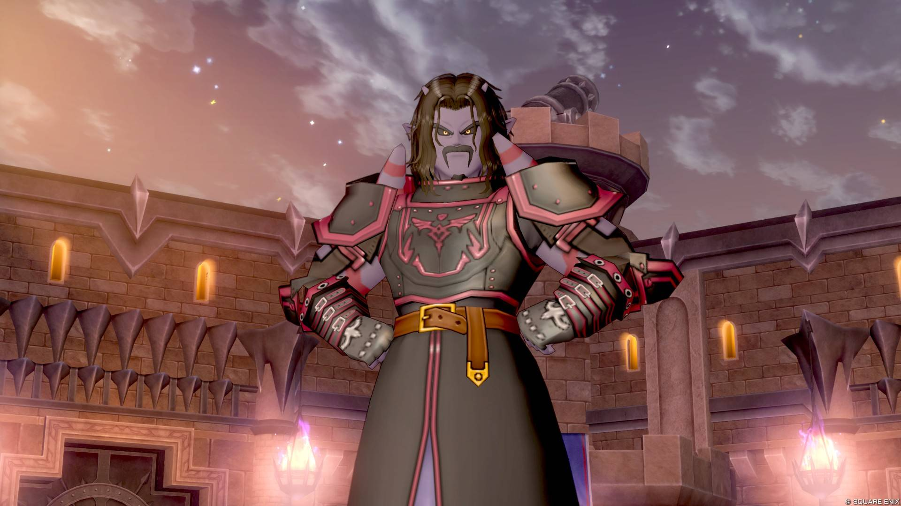

ごあいさつGreetings

我らが栄誉、我らが命は大魔王様と共にあり
公式HPをご覧の皆様、初めまして。この度、親衛隊並びに魔界保安本部初代司令官へ就任いたしました、ハルトヴィヒです。
老兵という言葉が、気を抜けばすぐそこにまで迫る頃となり、我ながらよくぞここまで長く兵役の中で生き延びてきた者だとおもっております。それも、今代大魔王様に出会うために導かれたモノであったのだと、今は思っている次第であります。
かつてネロディオス覇王国が滅び去り、その余波による大波乱をまとめ上げた先代であるマデサゴーラ王が身罷られ、魔界は再び戦国の世へと戻ろうとしていた事は昨日のように思い出すことができます。かくいう私は、幼少期をネロディオス覇王国で過ごし、その滅亡から大戦乱を経た再統一を目にしていました。
魔界で"支柱"が消える光景を、２度この目で見た古株という事になりますね。
実を申さば、この老骨は戦場で散るものと常々思っておりました。戦場とは不思議なもので、死なんとすれば生き、生きんとすれば死ぬ。左様な理不尽がまかり通る場であります。良き隣人がその日の夕方に帰らず、愛しき家族が朝日を拝めない。そんな光景をどれほどの数見てきたでありましょう。あの時は、老いたこの身には希望を夢見る資格は残っていないと思っておりました。
そこに今代大魔王・オードリン様が現れました。これまでの大魔王、そして魔王として君臨された殆どの方々と違い、争いを好まれず、平穏を望まれるお方です。ただ平和を望むのみならず、三大国の魔王様とも時には言葉、時には武をもってして対話を重ね、今日の平穏を築かれました。
大魔瘴期という最大の危機が取り払われ、魔界に住む我々もまた、変革の時を迎えようとしています。
幾百幾千もの時が重ねてきた怒り、悲しみ、憎しみ。それらが一朝一夕で消える事が無い事は、私も、ひいては大魔王様もご存じです。なればこそ、誰かが率先して変わる先導をしなければなりません。
新たな大魔王様の御代に、大魔王直轄軍司令官として皆様の先導を務め、より良き魔界へと変えていく所存です。
皆々様、なにとぞよろしくお願い申し上げます。